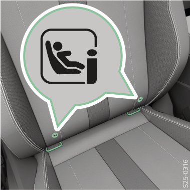
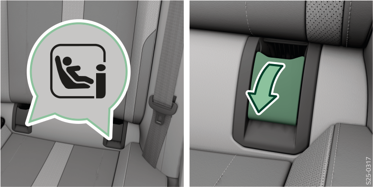
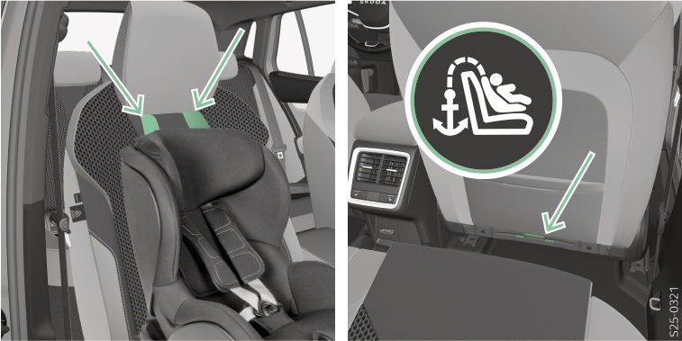
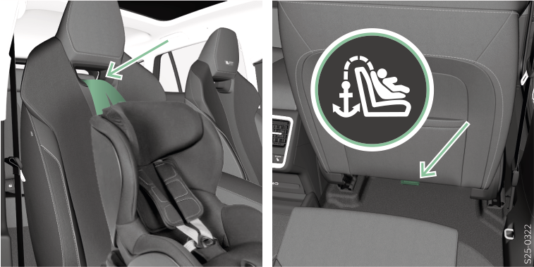

Respecter les instructions et les remarques données au début de ce chapitre Siège pour enfants.
ISOFIX/i-Size
Le système ISOFIX/i-Size permet de fixer rapidement et en toute sécurité le siège enfant. Les œillets pour l’installation du siège enfant avec le système ISOFIX/i-Size sont situés sur les sièges arrière extérieurs, et éventuellement sur le siège passager avant.

MISE EN GARDE
Ne pas fixer d’autres sièges pour enfants, ceintures ou objets aux œillets de fixation utilisés pour installer le siège enfant avec le système ISOFIX/i-Size.

Le siège pour enfants i-Size peut être utilisé sur les sièges du véhicule adaptés aux sièges pour enfants équipés du système ISOFIX/i-Size. Dans de rares cas, l’utilisation de sièges pour enfants de type i-Size peut être limitée, par exemple en raison de la taille excessive du siège pour enfants par rapport à la taille de l’habitacle.
Le siège pour enfants équipé du système ISOFIX ne peut être utilisé que si le véhicule figure sur la liste jointe au siège pour enfants.
Vous trouverez de plus amples informations sur le site Internet du fabricant du siège pour enfants ou auprès d’un partenaire Škoda.


Rabattre les capuchons avant d’installer le siège enfant.
TOP TETHER
MISE EN GARDE
Utiliser uniquement des sièges enfant avec le système TOP TETHER sur des sièges équipés d’œillets marqués avec le symbole TOP TETHER.
Pour attacher le système TOP TETHER, utiliser exclusivement des oeillets avec le pictogramme TOP TETHER.
Sur un œillet de retenue du système TOP TETHER, ne fixer qu'une seule ceinture de fixation du siège enfant.
Lors de la fixation du siège enfant avec le système TOP TETHER, aucun autre objet ne doit être attaché à l’œillet du système TOP TETHER.
La ceinture accroche du système TOP TETHER limite les mouvements de la partie supérieure du siège enfant.
Fixer le système TOP TETHER aux sièges arrière
La ceinture de sécurité TOP TETHER peut être passée entre les piges de centrage ou autour des piges de centrage de l’appuie-tête et fixée aux œillets de fixation TOP TETHER situés au dos du siège.
Les œillets de fixation TOP TETHER de la sangle sont situés sur les sièges arrières extérieurs A, éventuellement sur le siège arrière central B.
Fixer le système TOP TETHER sur le siège passager
La ceinture de sécurité TOP TETHER peut être passée entre les piges de centrage de l’appuie-tête ou à travers une ouverture dans le siège et fixée à l’œillet de fixation TOP TETHER.

